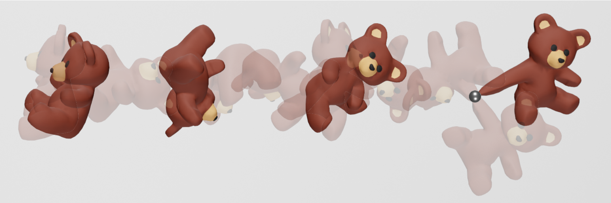

Constrained Projective Dynamics: Real-Time Simulation of Deformable Objects with Energy-Momentum Conservation
SIGGRAPH 2021 · ACM Transactions on Graphics
1 Korea University, Korea2 LTCI, Telecom Paris, IP Paris, France

Abstract
This paper proposes a novel energy-momentum conserving integration method. Adopting Projective Dynamics, the proposed method extends its unconstrained minimization for time integration into the constrained form with the position-based energy-momentum constraints. This resolves the well-known problem of unwanted dissipation of energy and momenta without compromising the real-time performance and simulation stability. The proposed method also enables users to directly control the energy and momenta so as to easily create the vivid deformable and global motions they want, which is a fascinating feature for many real-time applications such as virtual/augmented reality and games.
Video
BibTeX
@article{kee2021constrained,
author = {Kee, Min Hyung and Um, Kiwon and Jeong, WooSeok and Han, JungHyun},
title = {Constrained Projective Dynamics: Real-Time Simulation of Deformable Objects with Energy-Momentum Conservation},
journal = {ACM Transactions on Graphics},
year = {2021},
volume = {40},
number = {4},
articleno = {160},
numpages = {12},
doi = {10.1145/3450626.3459878},
url = {https://doi.org/10.1145/3450626.3459878}
}